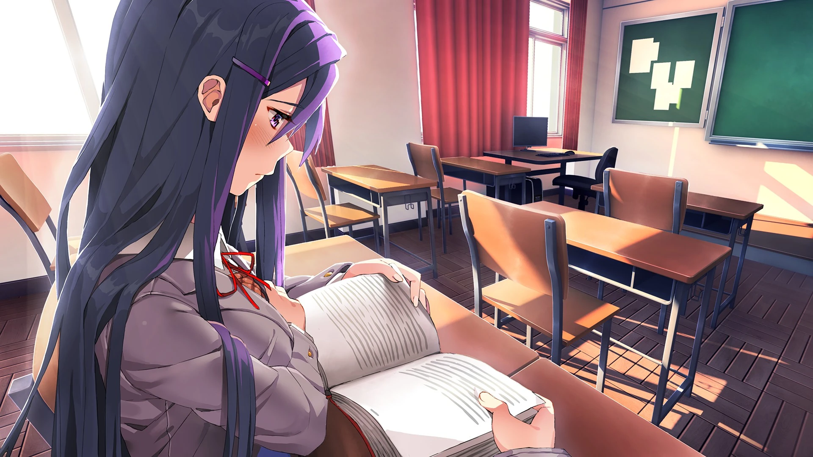
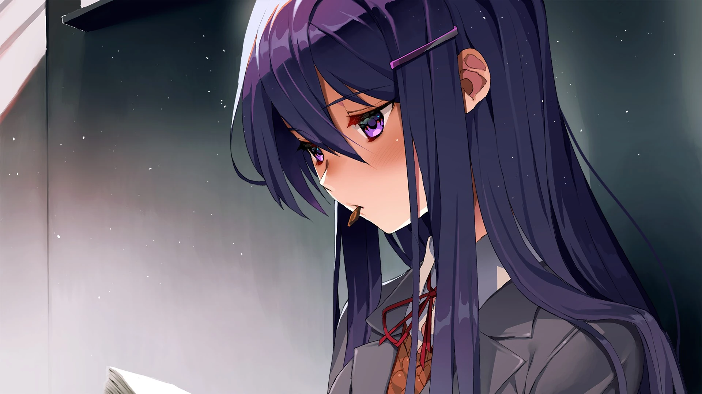
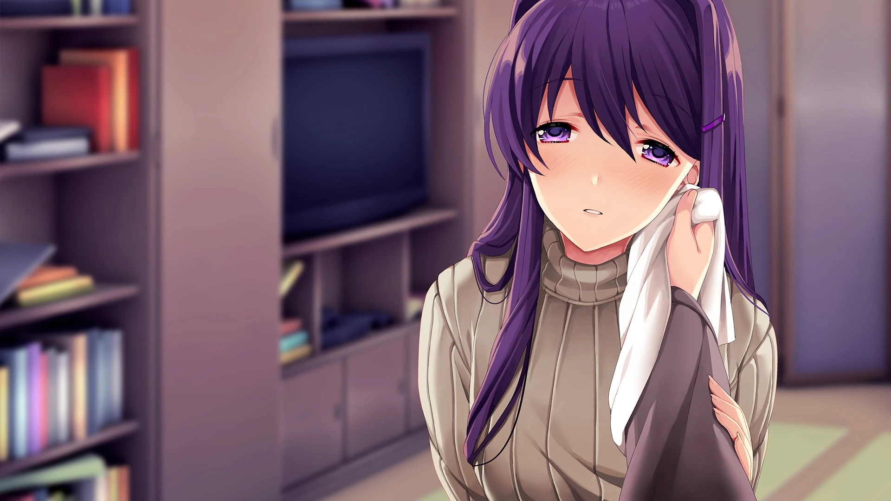
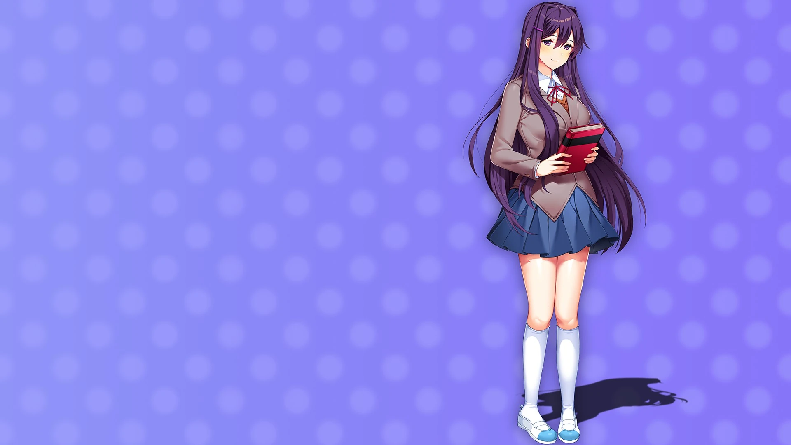
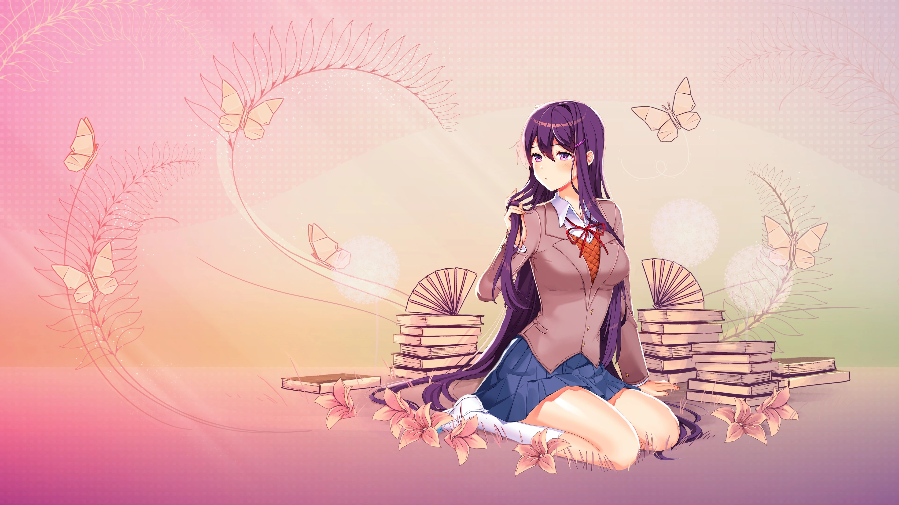
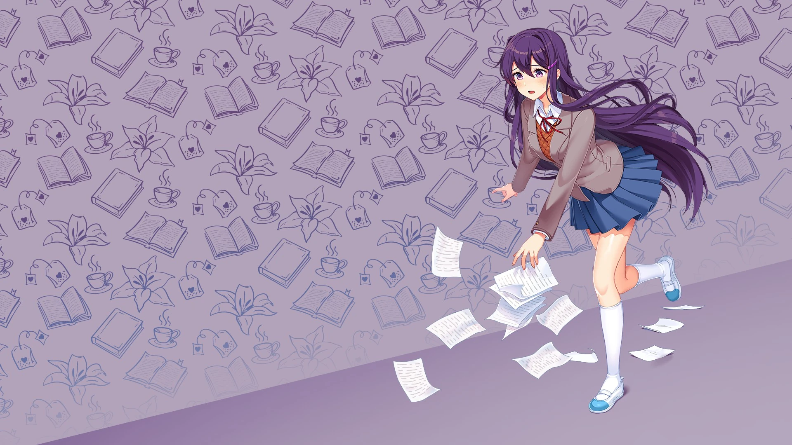
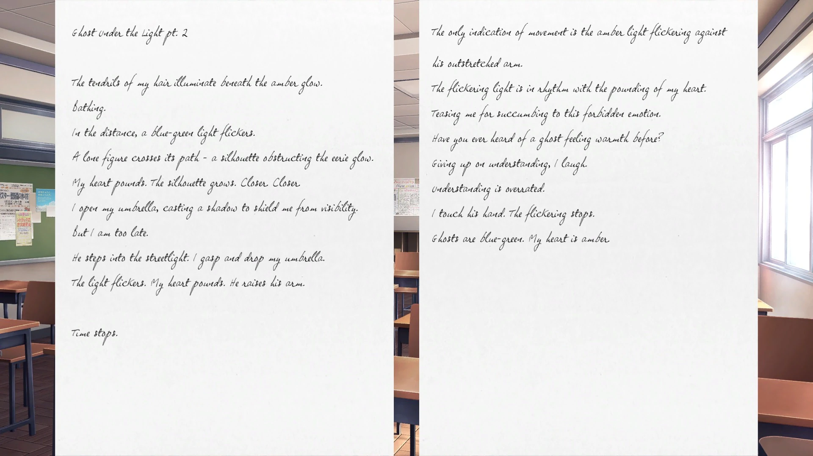
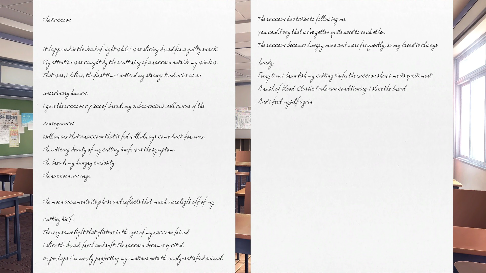
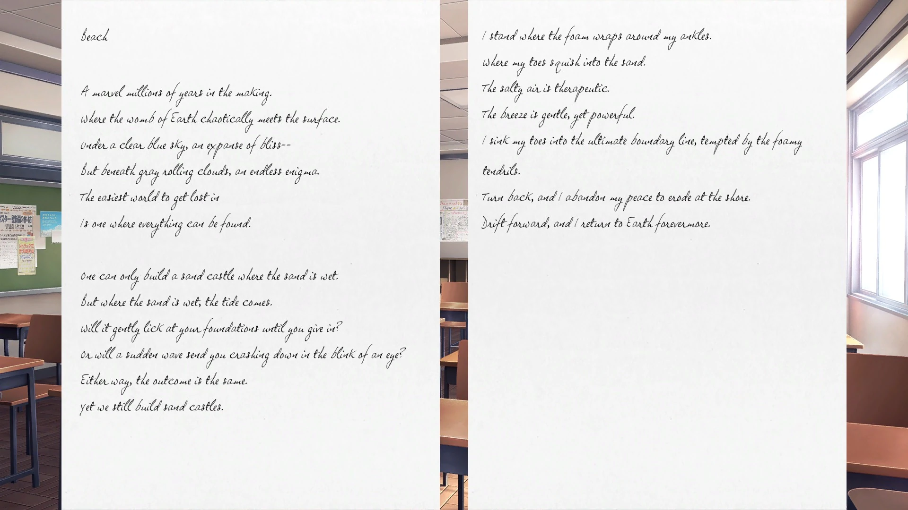
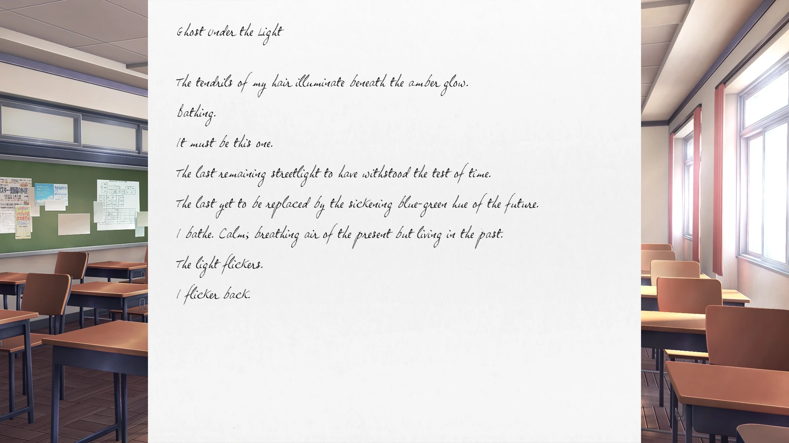
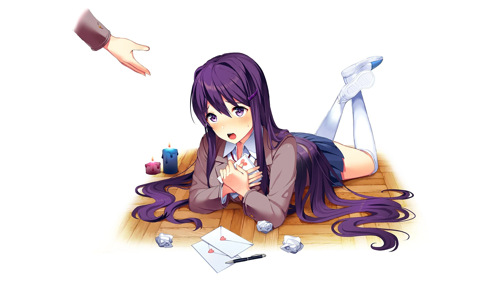
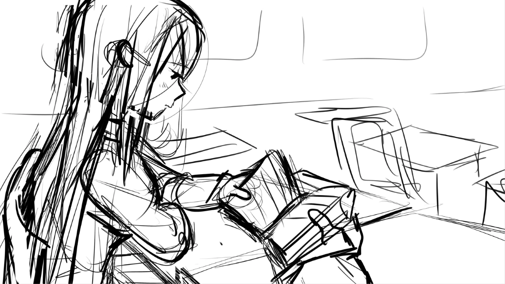
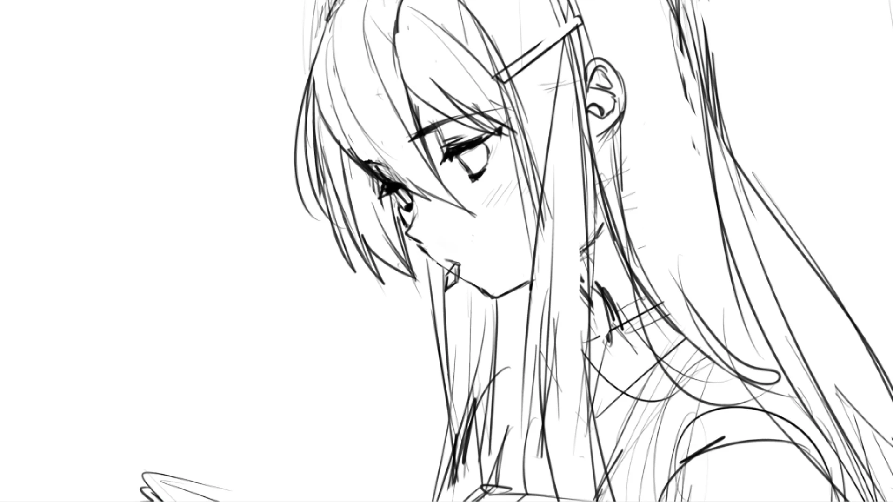
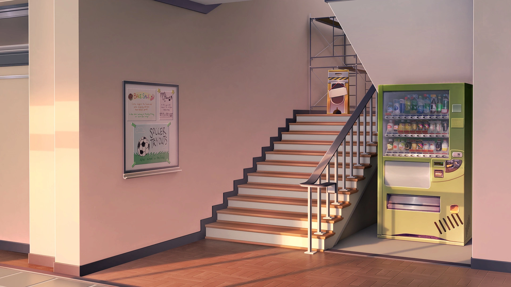
Durant les mini-jeux de poésie, vous devez choisir le plus de mots qui rendent Yuri heureuse. Un seul poème est nécessaire pour obtenir cette illustration.
Durant les mini-jeux de poésie, vous devez choisir le plus de mots
qui rendent Yuri heureuse. Deux poèmes dédiés à Yuri sont
nécessaires pour obtenir cette illustration.
Lorsque vous aurez le choix entre Natsuki et Yuri, choisissez Yuri.
Terminez l'histoire secondaire « Confiance 1 ».
Possédé dès le début du jeu. Exclusif aux versions iOS et Android
de Doki Doki Literature Club.
Terminez l'histoire parallèle « Reflection 2 »
Écrivez les trois poèmes pour Yuri
Jouez à DDLC
Jouez à DDLC
Jouez à DDLC
Dans l'acte 1, écrivez un poème pour un personnage différent
à chaque chapitre.
Durant le jeu de poésie, écrivez un poème parfait pour Yuri.
Dans l'acte 1, écrivez les trois poèmes pour Yuri.
Jouez à travers « Reflection »